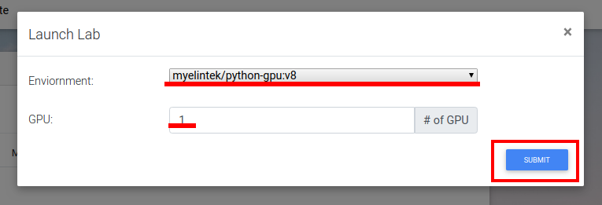
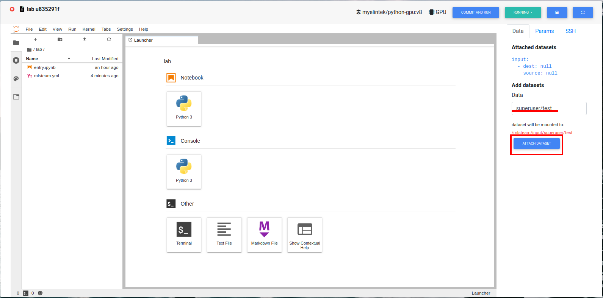
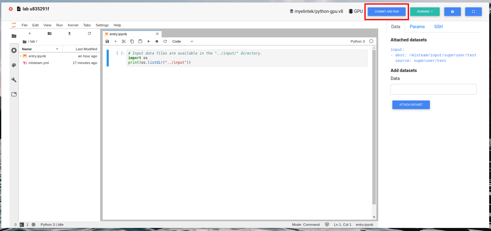

Lab¶
Create lab¶
Select project thet lab will be created in. Press “Lab” button.

Press “New Lab”.

Sellect docker image to create lab in. The default image is “myelintek/python-gpu”. Sellect the number of gpus to assign to lab. Press “Submit”.

Browse labs¶
Browse labs of the specific project. Go to project page. Press “Lab” button.
Press on lab id to browse it.

Attach dataset to the lab¶
Type dataset name (how to create dataset?) at the “Attach dataset” box. Press “Attach dataset” button.
Todo
Restart lab to see the dataset attached
Browse dataset by going to directory specified as “dest” parameter, /mlsteam/input/superuser/test in our case.


Add new directory to dataset, if needed.

Upload new files to dataset, if needed.

Start lab¶
First attach dataset to the lab.
Write necessary code and adjust config file mlsteam.yml.

Press “Commit and run”.
This will create a job from the code that lab contains.
Browse job to see output. In our case, output is the content of folder /mlsteam/input.


Delete lab¶
On the project page press “Lab” button. Stop needed lab. On the list of labs page click on the trash icon on the side of the lab name.